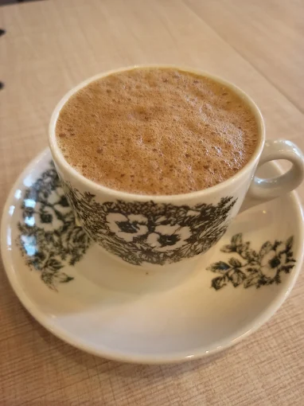
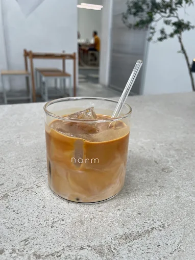
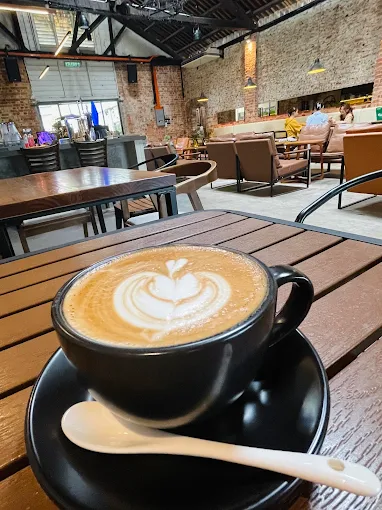
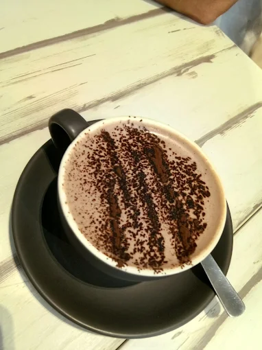
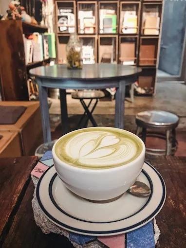
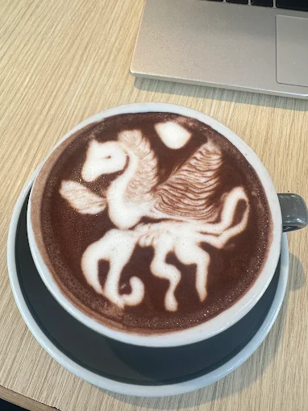
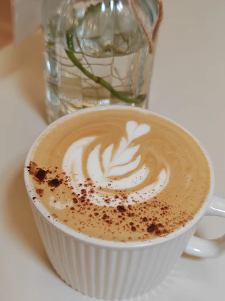
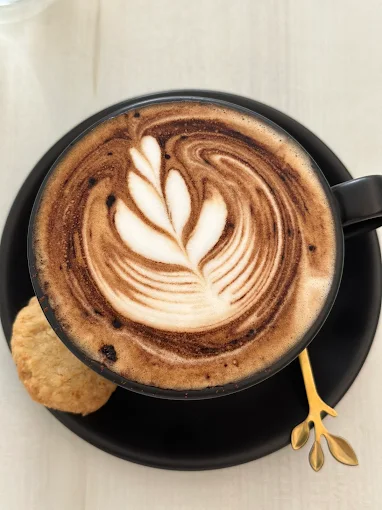
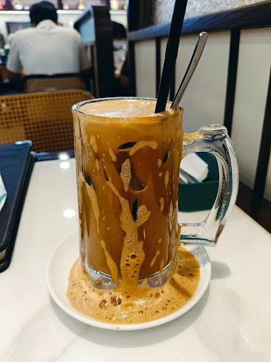

A life influenced by Northern cuisine and the vibrant culture of Penang with a hint of coffee along the way.
Penang Food Paradise
As a Penangite, the city's food taught me that the best things in life (like char kway teow at a smoky roadside stall or the sweet sting of asam laksa) aren't found in fancy places, but in the messy, vibrant heart of everyday chaos.
- Pablo's - A vibrant fusion eatery serving bold, flavor-packed tacos and creamy pastas, blending Western indulgence with local flair.
- Char Kway Teow - Smoky wok-fried flat rice noodles tossed with prawns, Chinese sausage, eggs, and bean sprouts.
- Penang Laksa - A tangy, spicy tamarind-based fish broth served with thick rice noodles, garnished with mint, onions, cucumber, and pineapple.
- Nasi Kandar - Steamed rice accompanied by a medley of rich, aromatic curries and assorted side dishes like fried chicken, okra, and hard-boiled eggs.
- Curry Mee - A rich and spicy coconut milk-based noodle soup filled with tofu puffs, cuttlefish, shrimp, and cockles, topped with a dollop of chili paste.
- Lor Bak - Five-spice marinated pork rolls wrapped in beancurd skin, deep-fried to perfection, and served with chili sauce and thick soy-based dip.
- Oyster Omelette - A crispy, starchy omelette packed with fresh oysters and served with a tangy chili sauce.
- Hokkien Mee - A flavorful prawn and pork broth noodle soup served with yellow noodles, rice vermicelli, shrimp, pork slices, and boiled egg.
- Apom Balik - A sweet, crispy-edged pancake with a soft center, typically filled with crushed peanuts, sweet corn, and sugar.
Coffee Culture
Penang's cafés taught me that the best moments come with coffee, whether it's a strong kopitiam brew or a slow-poured artisan cup, each sip carrying the city's laid-back soul.








